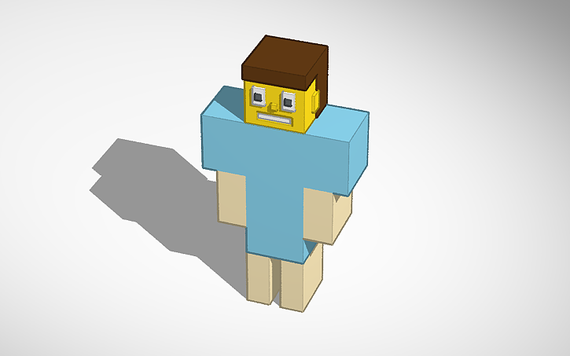

Собираем туловище
Перетащи параллелепипед на рабочую плоскость и измени его размер. По видео собери широкую верхнюю часть и узкое туловище Стива.
IT CAMP · 3D-моделирование
Собери Стива из простых фигур в Tinkercad. Смотри короткое видео к каждому шагу и повторяй за ним.

Открой класс по ссылке или введи код на странице входа.
Перетащи параллелепипед на рабочую плоскость и измени его размер. По видео собери широкую верхнюю часть и узкое туловище Стива.
Выдели фигуру и потяни за белые маркеры, чтобы получить нужную форму. Повторяй движения из видео и не торопись.
Добавь новые блоки и поставь их рядом с туловищем, как показано в видео. Проверь, что детали стоят на рабочей плоскости.
Выдели нужную фигуру и открой палитру цвета. Подбери оттенки для одежды и кожи, как в примере.
Выдели связанные детали и объедини их командой группировки, как в видео. Так части модели будут держаться вместе.
Добавь две детали для ног. Расположи их под туловищем и оставь небольшой промежуток между ними.
Посмотри на модель с разных сторон. Проверь, что руки и ноги стоят ровно, а части тела не потерялись.
Найди голову персонажа в библиотеке фигур и поставь её на туловище. Подгони положение, как показано в видео.
Осмотри готового Стива. Если какая-то деталь стоит криво, выдели её и поправь положение.